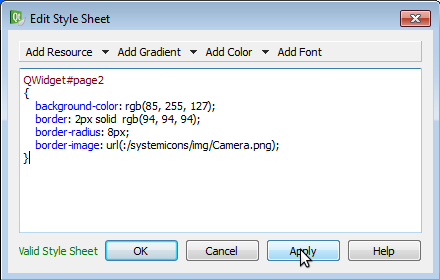

It is possible to customize the page background, changing its colour, adding an image and inserting an edge.
To do this do:
Click the right mouse key on a free area of the page,
Choose “Change styleSheet”
In the new window add the following code:
QWidget#<pagename>
{
}
where in the <page name> field write the actual page name.
To change background color put in the curly bracket the code:
background-color: rgb(RRR, GGG, BBB);
where in the RRR, GGG, BBB field put the desired color in RGB format
To add a border put in the curly bracket the code:
border: Wpx solid rgb(RRR, GGG, BBB);
border-radius: Rpx;
where in the Wpx field put the thikness of the border in pixel (eg.: 2px) and in the RRR, GGG, BBB field put the desired color in RGB format and in the Rpx field put the radius of the border in pixel (eg.: 8px).
To show the image in the original size and centered put in the curly bracket the code:
border-image: url(:/systemicons/img/Camera.png);
where in the “:/systemicons/img/Camera.png” put the path of the desired image in the resource file.
To resize the image in the window put in the curly bracket the code:
image: url(:/systemicons/img/Camera.png);
where in the “:/systemicons/img/Camera.png” put the path of the desired image in the resource file.
Press OK
WARNING: program is case sensitive.
All these setups can be done without writing code, select drop down menu: “Add Resource” and “Add Color”.
WARNING: don’t use a gradient color because slows down the panel performance.
To customize the splash screen overwrite the “splash.png” file in the “config” folder of the project. Splash image must be in the png format, of the same screen resolution of the used product:
TPAC1006/TP1057 => 320x240;
TPAC1007/TP1043 => 480x272;
TPAC1008/TP1070 => 800x480.